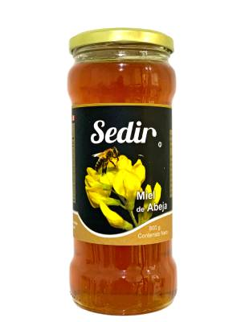
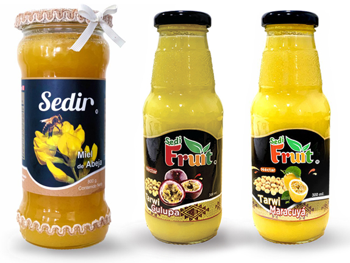
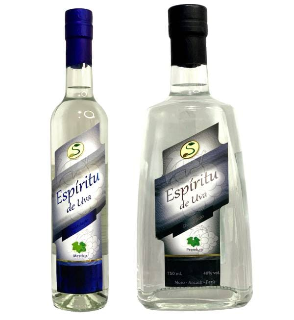
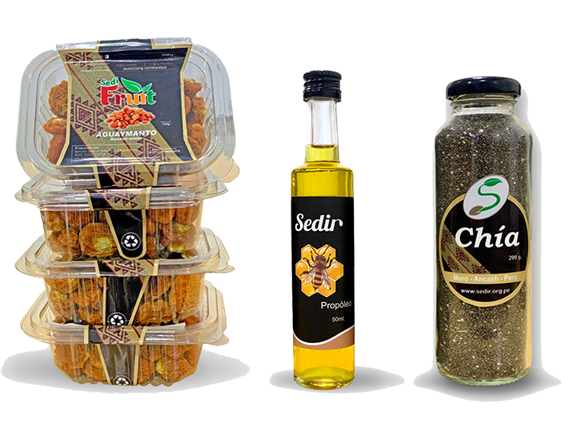
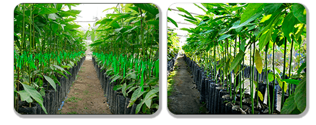

Línea Alimentos
Productos naturales procesados bajo estrictos controles de calidad e inocuidad.

Sedifruit
Elaboradas con frutas seleccionadas de la zona, conservando su sabor, aroma y propiedades naturales para desayunos y postres.

Miel de Abeja
Pura y natural, recolectada de colmenas manejadas de forma sostenible en el valle. Rica en antioxidantes y propiedades nutritivas.

Néctar de Frutas
Elaborados con la mejor selección de frutas locales, manteniendo su sabor original y valor nutricional sin aditivos nocivos.

Destilados y Licores
Fino destilado de uva y exquisitos licores de fruta, elaborados bajo estrictos parámetros artesanales del valle.

Aguaymanto - Própolis - Chía
Combinación seleccionada de origen natural, con propiedades nutricionales valiosas para el bienestar diario.
Línea No Alimentos Agrícola e Insumos
Material genético certificado y soluciones técnicas para potenciar la producción agrícola regional.

Plantones de Palto
Plantas vigorosas, injertadas bajo rigurosos controles sanitarios y libres de patógenos, listas para establecimiento en campo definitivo.
Plantones de Mango

Plantones de Lúcuma
Material genético seleccionado para garantizar adaptabilidad climática y alto rendimiento productivo:
- Portainjerto Palo: Excelente vigor estructural y alta tolerancia a suelos complejos.
- Variedad Seda: Fruto de pulpa tersa, suave y dulce, ideal para la industria repostera.
- Variedad Beltrán: Rendimiento comercial constante y frutos de óptima calidad.
Otros Insumos Agropecuarios
Semilla de Gulupa
Semillas seleccionadas para cultivos de alta rentabilidad y demanda comercial externa.
Compost Orgánico
Enmienda orgánica orientada a mejorar la estructura del suelo y optimizar la retención de humedad.